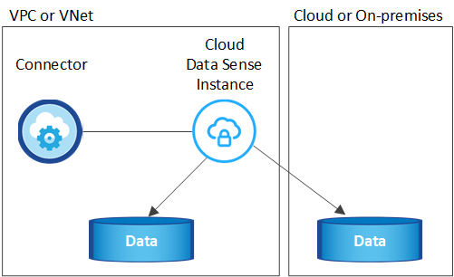
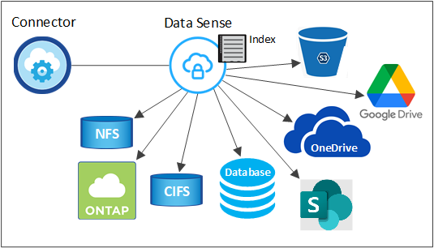

要求變更文件
要求變更文件 編輯此頁面
編輯此頁面 瞭解如何作出貢獻
瞭解如何作出貢獻深入瞭解Cloud Data Sense
Cloud Data Sense是適用於Cloud Manager的資料治理服務、可掃描企業內部部署與雲端資料來源及工作環境、以對應及分類資料、並識別私有資訊。這有助於降低安全性與法規遵循風險、降低儲存成本、並協助您執行資料移轉專案。
功能
Cloud Data Sense提供多種工具、可協助您達成法規遵循目標。您可以使用Data Sense：
-
識別個人識別資訊（ PII ）
-
根據 GDPR 、 CCPA 、 PCI 及 HIPAA 隱私權法規的要求、識別廣泛的敏感資訊
-
回應資料主體存取要求（ DSAR ）
-
當檔案包含特定PII時、透過電子郵件通知Cloud Manager使用者（您使用定義此條件 "原則"）
-
檢視及修改 "Azure資訊保護（AIP）標籤" 在您的檔案中
-
將自訂標記新增至檔案（例如「需要搬移」）、並指派Cloud Manager使用者、讓該人員擁有檔案的更新
-
複製、移動及刪除檔案
Cloud Data Sense也提供各種工具、協助您善用治理方式。您可以使用Cloud Data Sense：
-
識別系統中過時的資料、非商業資料、重複的檔案、具有開放權限的檔案、以及非常大的檔案。
您可以使用此資訊來決定是否要將某些檔案移至較便宜的物件儲存設備、刪除或分層處理。
-
在移動資料之前、請先檢視資料大小、以及是否有任何資料包含敏感資訊。
如果您打算將資料從內部部署位置移轉至雲端、這項功能就很實用。
支援的工作環境和資料來源
Cloud Data Sense可掃描下列工作環境和資料來源類型的資料：
工作環境：
-
（部署於AWS、Azure或GCP）Cloud Volumes ONTAP
-
內部部署 ONTAP 的叢集
-
Azure NetApp Files
-
Amazon FSX for ONTAP Sf
-
Amazon S3
資料來源：
-
非NetApp檔案共用
-
物件儲存（使用S3傳輸協定）
-
資料庫
-
OneDrive 帳戶
-
SharePoint帳戶
Data Sense支援NFS 3.x、4.0及4.1版、以及CIFS 1.x、2.0、2.1及3.0版。
成本
-
使用Cloud Data Sense的成本取決於您要掃描的資料量。Data Sense在Cloud Manager工作區中掃描的前1 TB資料是免費的。這包括所有工作環境和資料來源的所有資料。必須訂閱AWS、Azure或GCP Marketplace、或NetApp的BYOL授權、才能在該點之後繼續掃描資料。請參閱 "定價" 以取得詳細資料。
-
若要在雲端上安裝Cloud Data Sense、必須部署雲端執行個體、這會導致雲端供應商在部署雲端執行個體時收取費用。請參閱 為每個雲端供應商部署的執行個體類型。如果您在內部部署系統上安裝Data Sense、則不需支付任何費用。
-
Cloud Data Sense需要部署Connector。在許多情況下、由於 Cloud Manager 中使用的其他儲存設備和服務、您已經擁有 Connector 。連接器執行個體會從部署該執行個體的雲端供應商收取費用。請參閱 "為每個雲端供應商部署的執行個體類型"。如果您將連接器安裝在內部部署系統上、則無需支付任何費用。
資料傳輸成本
資料傳輸成本取決於您的設定。如果Cloud Data Sense執行個體和資料來源位於相同的可用度區域和區域、則不會產生資料傳輸成本。但是如果Cloud Volumes ONTAP 資料來源（例如、不支援的系統或S3時段）位於_不同_可用度區域或區域、則您的雲端供應商會向您收取資料傳輸成本。如需詳細資料、請參閱以下連結：
Cloud Data Sense執行個體
當您在雲端部署Data Sense時、Cloud Manager會將執行個體部署在連接器所在的同一子網路中。 "深入瞭解連接器。"

|
如果連接器安裝在內部環境中、它會在Cloud Volumes ONTAP 要求中的第一個支援系統相同VPC或vnet中部署Cloud Data Sense執行個體。您也可以在內部安裝Data Sense。 |

請注意下列關於預設執行個體的資訊：
-
在AWS中、Cloud Data Sense可在上執行 "m5.4xLarge 執行個體" 使用 500 GB GP2 磁碟。作業系統映像是Amazon Linux 2（Red Hat 7.3.1）。
在無法使用m5.4xLarge的區域中、Data Sense會改為在m4.4xLarge執行個體上執行。
-
在Azure中、Cloud Data Sense可在上執行 "Standard_D16s_v3 VM" 使用 512 GB 磁碟。作業系統映像是CentOS 7.8。
-
在GCP中、Cloud Data Sense可在上執行 "n2-Standard-16 VM" 使用512 GB標準持續磁碟。作業系統映像是CentOS 7.9。
在無法使用n2-Standard-16的區域中、Data Sense會改為在n2d-Standard-16或n1-Standard-16 VM上執行。
-
此執行個體的名稱為 CloudCompliance _ 、並以產生的雜湊（ UUID ）串聯在其中。例如： _CloudCompliance -16bb6564-38ad-4080-9a92-36f5fd2f71c7
-
每個連接器只部署一個Data Sense執行個體。
-
只要執行個體能夠存取網際網路、就會自動升級Data Sense軟體。

|
由於Cloud Data Sense會持續掃描資料、因此執行個體應隨時保持執行狀態。 |
使用較小的執行個體類型
您可以在CPU較少、RAM較少的系統上部署Data Sense、但使用這些功能較不強大的系統時會有一些限制。
| 系統大小 | 規格 | 限制 |
|---|---|---|
超大（預設） |
16個CPU、64 GB RAM、500 GB SSD |
無 |
中 |
8個CPU、32 GB RAM、200 GB SSD |
掃描速度較慢、最多只能掃描100萬個檔案。 |
小 |
8個CPU、16 GB RAM、100 GB SSD |
與「中」相同的限制、加上識別能力 "資料主旨名稱" 內部檔案已停用。 |
在雲端部署Data Sense時、如果您想要使用其中一個較小的系統、請寄送電子郵件至ng-contact-data-sense@netapp.com尋求協助。我們需要與您合作、以部署這些較小型的雲端組態。
在內部部署Data Sense時、只需使用規格較小的Linux主機即可。您不需要聯絡NetApp尋求協助。
Cloud Data Sense的運作方式
在高層級、Cloud Data Sense的運作方式如下：
-
您可以在Cloud Manager中部署Data Sense執行個體。
-
您可以在一或多個工作環境或資料來源上啟用高層對應或深度層級掃描。
-
Data Sense會使用AI學習程序掃描資料。
-
您可以使用所提供的儀表板和報告工具、協助您達成法規遵循與治理目標。
掃描的運作方式
啟用Cloud Data Sense並選取您要掃描的磁碟區、儲存區、資料庫架構、OneDrive或SharePoint使用者資料之後、它會立即開始掃描資料、以識別個人和敏感資料。它會對應您的組織資料、分類每個檔案、並識別及擷取資料中的實體和預先定義的模式。掃描結果是個人資訊、敏感個人資訊、資料類別和檔案類型的索引。
Data Sense可掛載NFS和CIFS磁碟區、如同任何其他用戶端一樣連線至資料。NFS 磁碟區會自動以唯讀方式存取、而您需要提供 Active Directory 認證來掃描 CIFS 磁碟區。

在初始掃描之後、Data Sense會持續掃描您的資料、以偵測遞增變更（這也是為何務必保持執行個體的重要性）。
您可以在磁碟區層級、儲存庫層級、資料庫架構層級、OneDrive使用者層級和SharePoint網站層級啟用和停用掃描。
對應掃描與分類掃描之間有何差異
Cloud Data Sense可讓您在選定的工作環境和資料來源上執行一般的「對應」掃描。對應只提供資料的高層級總覽、而分類則提供資料的深度層級掃描。您可以很快在資料來源上完成對應、因為它不會存取檔案來查看內部資料。
許多使用者喜歡這項功能、因為他們想要快速掃描資料、找出需要更多研究的資料來源、然後只能在這些資料來源或磁碟區上進行分類掃描。
下表顯示部分差異：
| 功能 | 分類 | 對應 |
|---|---|---|
掃描速度 |
慢 |
快速 |
檔案類型和已用容量的清單 |
是的 |
是的 |
檔案數量和已用容量 |
是的 |
是的 |
檔案的存留時間和大小 |
是的 |
是的 |
執行的能力 "資料對應報告" |
是的 |
是的 |
「資料調查」頁面可檢視檔案詳細資料 |
是的 |
否 |
在檔案中搜尋名稱 |
是的 |
否 |
建立 "原則" 提供自訂搜尋結果 |
是的 |
否 |
使用AIP標籤和狀態標籤來分類資料 |
是的 |
否 |
複製、刪除及移動來源檔案 |
是的 |
否 |
執行其他報告的能力 |
是的 |
否 |
Cloud Data Sense索引的資訊
Data Sense會收集、索引及指派類別給您的資料（檔案）。Data Sense索引的資料包括下列項目：
- 標準中繼資料
-
Cloud Data Sense會收集有關檔案的標準中繼資料：檔案類型、檔案大小、建立和修改日期等。
- 個人資料
-
個人識別資訊、例如電子郵件地址、識別號碼或信用卡號碼。 "深入瞭解個人資料"。
- 敏感的個人資料
-
GDPR 及其他隱私權法規所定義的特殊敏感資訊類型、例如健康資料、族群來源或政治見解。 "深入瞭解敏感的個人資料"。
- 類別
-
Cloud Data Sense會將掃描的資料分成不同類型的類別。類別是以 AI 分析每個檔案的內容和中繼資料為基礎的主題。 "深入瞭解類別"。
- 類型
-
Cloud Data Sense會將掃描的資料取走、並依檔案類型加以細分。 "深入瞭解類型"。
- 名稱實體辨識
-
Cloud Data Sense使用AI從文件中擷取天然人士的姓名。 "瞭解如何回應資料主體存取要求"。
網路總覽
Cloud Manager部署Cloud Data Sense執行個體時、其安全群組可從Connector執行個體啟用傳入HTTP連線。
在SaaS模式下使用Cloud Manager時、Cloud Manager連線會透過HTTPS提供、而在瀏覽器和Data Sense執行個體之間傳送的私有資料則會以端點對端點加密來保護、這表示NetApp和第三方無法讀取。
傳出規則已完全開啟。需要存取網際網路、才能安裝及升級Data Sense軟體、並傳送使用量標準。
如果您有嚴格的網路需求、 "深入瞭解Cloud Data意義上的端點"。
使用者存取法規遵循資訊
指派給每位使用者的角色、可在Cloud Manager內及Cloud Data範圍內提供不同的功能：
-
*帳戶管理員*可管理所有工作環境的法規遵循設定及檢視法規遵循資訊。
-
*工作區管理*只能管理具有存取權限的系統的法規遵循設定及檢視法規遵循資訊。如果Workspace管理程式無法在Cloud Manager中存取工作環境、他們就無法在「Data Sense（資料感測）」索引標籤中看到工作環境的任何法規遵循資訊。
-
具有* Compliance Viewer*角色的使用者只能檢視法規遵循資訊、並針對擁有存取權限的系統產生報告。這些使用者無法啟用 / 停用掃描磁碟區、儲存區或資料庫架構。這些使用者也無法複製、移動或刪除檔案。